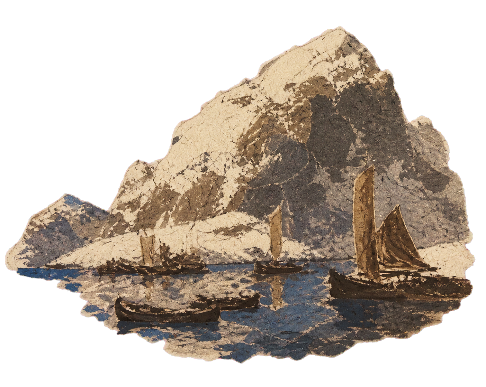
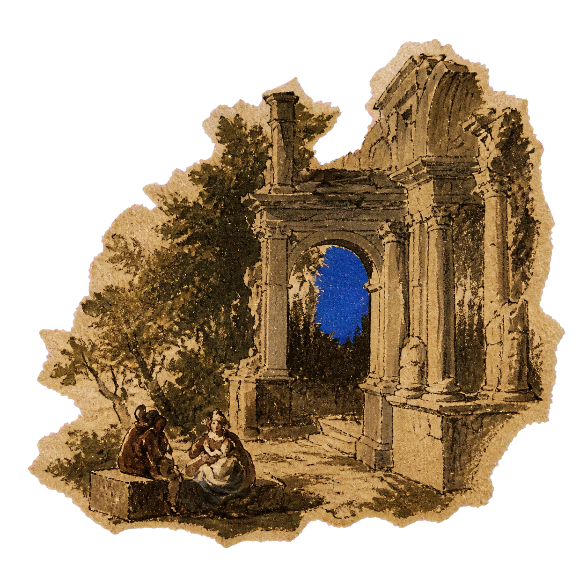
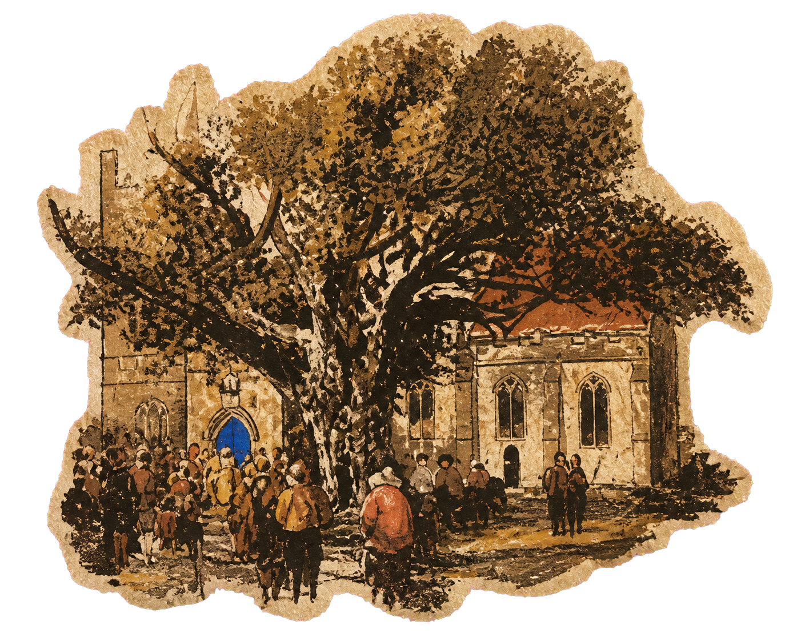

An atlas of market thought
Read the market
as a living landscape.
Quantitative research begins with relationships: what holds, what migrates, what repeats and what changes scale. This visual atlas gives those invisible structures a material form.

04 THEMES04 PLATES01 DISCIPLINE
Architecture before
prediction.
Reliable decisions rest on coherent data, explicit assumptions and models whose internal logic can be inspected.

Ⅱ / CYCLESPatterns return.
Conditions do not.
We study recurrence without assuming repetition.
 Ⅲ / MIGRATION
Ⅲ / MIGRATIONCapital moves.
Risk follows.
Flows connect markets across geography and time.
The long horizon
changes the view.
Scale is part of the model, not merely the chart.
